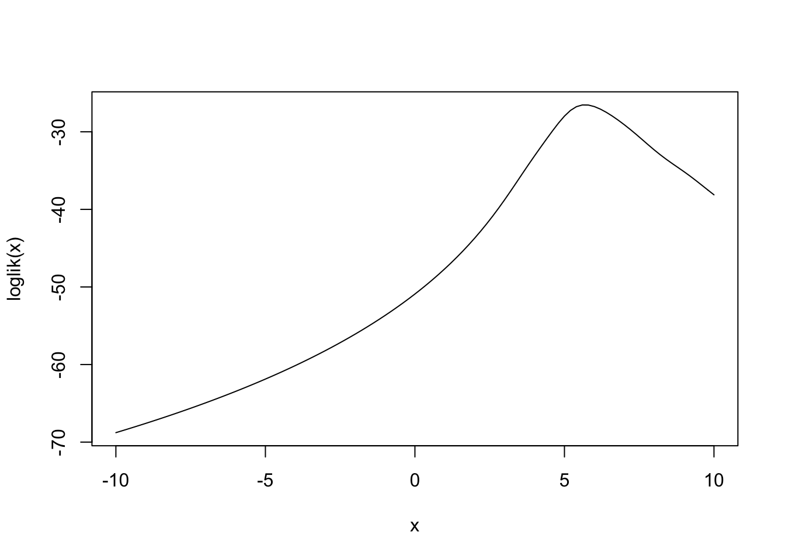
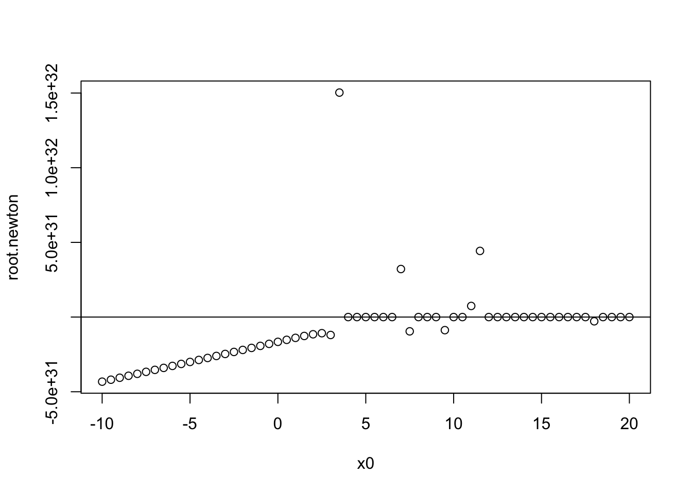
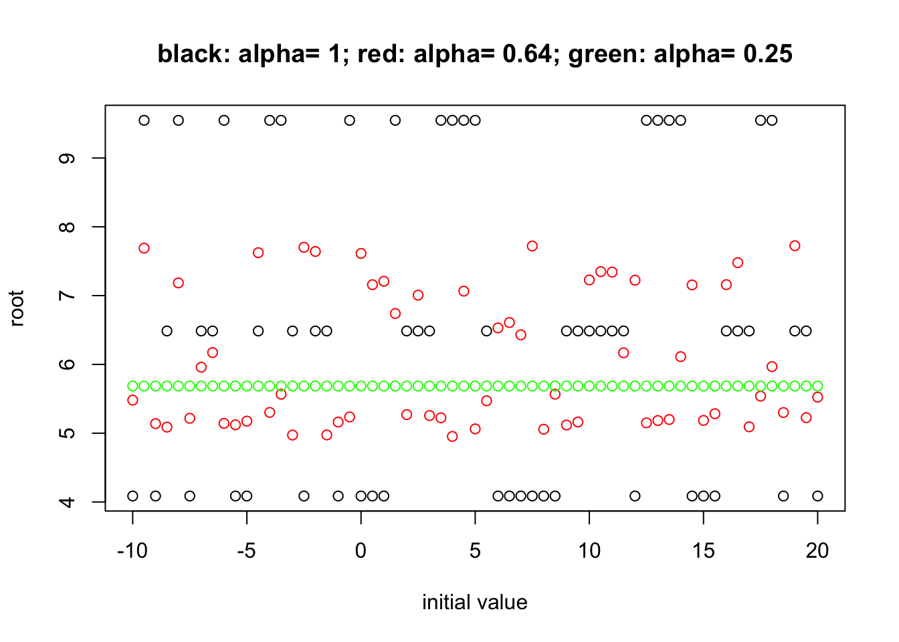
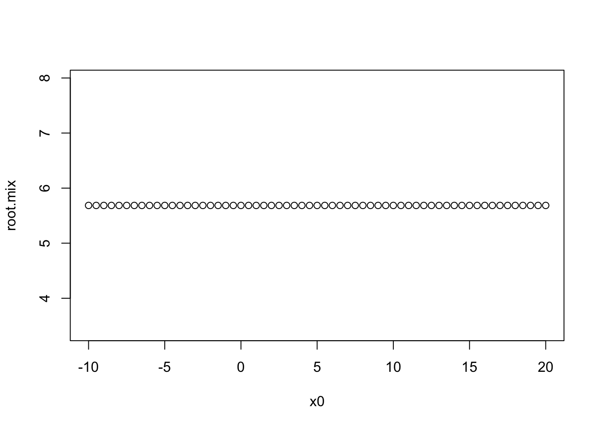

STAT 5361 Statistical Computing Solution
Disheng Mao
2018-10-03
Problem 1 Exercise 3.3.1
1.1 Get Fisher Information
\[\begin{align*} f(x;\theta) &= \frac{1}{\pi(1+(x-\theta)^2)}\\ \Rightarrow l(\theta) &= \sum_{i = 1}^n \ln(f(X_i;\theta)) = -n\ln(\pi) - \sum_{i = 1}^n\ln(1+(X_i-\theta)^2)\\ \Rightarrow l'(\theta) &= -2\sum_{i = 1}^n\frac{\theta-X_i}{1+(\theta-X_i)^2}\\ \Rightarrow l''(\theta) &= -2\sum_{i = 1}^n[\frac{1}{1+(\theta-X_i)^2} - \frac{2(\theta-X_i)^2}{[1+(\theta - X_i)^2]^2}] = -2\sum_{i = 1}^n\frac{1-(\theta-X_1)^2}{[1+(\theta-X_i)^2]^2}\\ \Rightarrow I_n(\theta) &= -El''(\theta)\\ &= 2nE\frac{1-(\theta - X)^2}{[1+(\theta-X)^2]^2}\\ &=\frac{2n}{\pi}\int_R\frac{1-(x-\theta)^2}{(1+(x-\theta)^2)^3}dx\\ &=\frac{2n}{\pi}\int_R\frac{1-x^2}{(1+x^2)^3}dx\\ &= \frac{2n}{\pi}\int_R\frac{-1}{(1+x^2)^2}+2\frac{2}{(1+x^2)^3}dx\\ \end{align*}\] Also: \[\begin{align*} M_k &= \int_R\frac{1}{(1+x^2)^k}dx\\ &= \int_R\frac{1+x^2}{(1+x^2)^{k+1}}dx\\ &= M_{k+1} + \int_R\frac{x^2}{(1+x^2)^{k+1}}dx\\ &= M_{k+1} + \int_R\frac{2kx}{(1+x^2)^{k+1}}\frac{x}{2k}dx = M_{k+1}+\frac{1}{2k}M_k\\ \end{align*}\]Since \(M_1 = \pi\), we have \(M_2 = \pi/2, M_3 = 3\pi/8\), then \(I_n(\theta) = n/2\).
1.2 Implement loglikelihood with a random sample and plot against \(\theta\)
Use the loglikelihood function we got from above, set n = 10 and plug in the generated sample value \(X_i\), we can get the loglikelihood function. When generating sample, the location parameter was set to be \(\theta = 5\). The loglikelihood function curve against \(\theta\) are shown in Figure :
set.seed(20180909)
n <- 10
X <- rcauchy(n, location = 5, scale = 1)
loglik.0 <- function(theta) {
l <- sum(dcauchy(X, location = theta, log = TRUE))
l
}
loglik <- function(theta) {
l <- sapply(theta, FUN = loglik.0)
l
}
curve(loglik, -10, 10)
1.3 Newton-Raphson method
library(pracma)
## define the derivitive function
dev.loglik <- function(theta) {
dev.l <- -2 * sum((theta-X)/(1+(theta-X)^2))
dev.l
}
## define the hessian function
hessian.loglik <- function(theta) {
h <- -2 * sum((1-(theta-X)^2) * (1+(theta-X)^2)^(-2))
h
}
x0 <- seq(-10, 20, by = 0.5)
root.newton <- rep(0, length(x0))
for (i in 1:length(x0)) {
root.newton[i] <- newtonRaphson(dev.loglik, x0 = x0[i], dfun = hessian.loglik)$root
}
plot(x0, root.newton)
abline(h = 5.442)
root.newton## [1] -4.324741e+31 -4.193577e+31 -4.062249e+31 -3.930748e+31 -3.799064e+31
## [6] -3.667185e+31 -3.535100e+31 -3.402796e+31 -3.270261e+31 -3.137479e+31
## [11] -3.004436e+31 -2.871118e+31 -2.737510e+31 -2.603599e+31 -2.469374e+31
## [16] -2.334832e+31 -2.199981e+31 -2.064850e+31 -1.929508e+31 -1.794100e+31
## [21] -1.658922e+31 -1.524582e+31 -1.392396e+31 -1.265439e+31 -1.151924e+31
## [26] -1.079358e+31 -1.199750e+31 1.502957e+32 2.056366e+01 2.108229e+01
## [31] 5.685422e+00 5.685422e+00 5.685422e+00 5.685422e+00 3.215974e+31
## [36] -9.558888e+30 1.937744e+01 2.108229e+01 5.685422e+00 -8.759488e+30
## [41] 2.108229e+01 5.685422e+00 7.439560e+30 4.429077e+31 2.056366e+01
## [46] 2.056366e+01 2.056366e+01 2.108229e+01 2.108229e+01 2.108230e+01
## [51] 1.937743e+01 2.056366e+01 2.056366e+01 1.937744e+01 1.937743e+01
## [56] 1.937744e+01 -2.825479e+30 2.056366e+01 2.056366e+01 2.056366e+01
## [61] 2.056366e+01We can see that Newton method doesn’t converge when initial value is not close to the real root.
1.4 Fixed point method
## self-defined fixed point methods to find mle
## input gradiant of loglikelihood function, x0 is initial value
FixPoint.mle <- function(dev.loglik, alpha, x0, maxiter = 100,
tol = .Machine$double.eps^0.5){
x <- x0
for (i in 1:maxiter) {
x.new <- alpha * dev.loglik(x) + x
if (abs(x.new - x) < tol) break
x <- x.new
}
if (i == maxiter) warning("maximum iteration has reached")
return(list(root = x, niter = i))
}
alpha <- c(1, 0.64, 0.25)
root.fixpoint <- matrix(0, ncol = length(alpha), nrow = length(x0))
for (i in 1:length(alpha)) {
for (j in 1:length(x0)) {
root.fixpoint[j, i] <- FixPoint.mle(dev.loglik = dev.loglik, alpha = alpha[i],
x0 = x0[j])$root
}
}
plot(x0, root.fixpoint[, 1], ylim = c(min(root.fixpoint), max(root.fixpoint)),
ylab = "root", xlab = "initial value",
main = paste0("black: ", expression(alpha), "= 1; red: ", expression(alpha),
"= 0.64; green: ", expression(alpha), "= 0.25"))
points(x0, root.fixpoint[, 2], col = "red")
points(x0, root.fixpoint[, 3], col = "green")
1.5 Fisher scoring and Newton-Raphson
## Self-defined fisher scoring method to find mle.
## input gradiant of loglikelihood and sample fisher information.
FisherScore.mle <- function(dev.loglik, information, x0, maxiter = 100,
tol = .Machine$double.eps^0.5) {
x <- x0
for (i in 1:maxiter) {
x.new <- x + dev.loglik(x) / information(x)
if (abs(x.new - x) < tol) break
x <- x.new
}
if (i == maxiter) warning("maximum iteration has reached")
return(list(root = x, niter = i))
}
FisherNewton.mle <- function(dev.loglik, information, dfun, x0, maxiter = 100,
tol = .Machine$double.eps^0.5) {
method.fisher <- FisherScore.mle(dev.loglik = dev.loglik, information = information,
x0 = x0, maxiter = maxiter, tol = tol)
x.fisher <- method.fisher$root
niter.fisher <- method.fisher$niter
method.newton <- newtonRaphson(fun = dev.loglik, x0 = x.fisher, dfun = dfun, maxiter = maxiter,
tol = tol)
return(list(root = method.newton$root, niter.fisher = niter.fisher,
niter.newton = method.newton$niter))
}
inf.cauchy <- function(x) n/2
root.mix <- rep(0, length(x0))
for (i in 1:length(x0)) {
root.mix[i] <- FisherNewton.mle(dev.loglik, inf.cauchy, dfun = hessian.loglik,
x0 = x0[i])$root
}
plot(x0, root.mix)
1.6 comparing the different methods
library(microbenchmark)
## comparing the speed of different methods
## use starting point 5, alpha = 0.25 for fixed point method
newton.method <- newtonRaphson(fun = dev.loglik, x0 = 5, dfun = hessian.loglik)
fixpoint.method <- FixPoint.mle(dev.loglik = dev.loglik, alpha = 0.25, x0 = 5)
fishernewton.method <- FisherNewton.mle(dev.loglik = dev.loglik, information = inf.cauchy,
dfun = hessian.loglik, x0 = 5)
list(newton.niter = newton.method$niter, fixpoint.niter = fixpoint.method$niter,
fishernewton.niter = c(fishernewton.method$niter.fisher,
fishernewton.method$niter.newton))## $newton.niter
## [1] 6
##
## $fixpoint.niter
## [1] 17
##
## $fishernewton.niter
## [1] 8 1Fixed point method is most stable but converges slowly compare to the other two methods. Newton-Raphson methods converges fastest but is the most unstably one. Fisher-Scoring converges slower than Newton, but is very stable and accuracy, after refining with Newton-Raphson methods. Also we can see that if we use fisher scoring root to be the initial value of Newton-Raphson method, it will converge very fast.